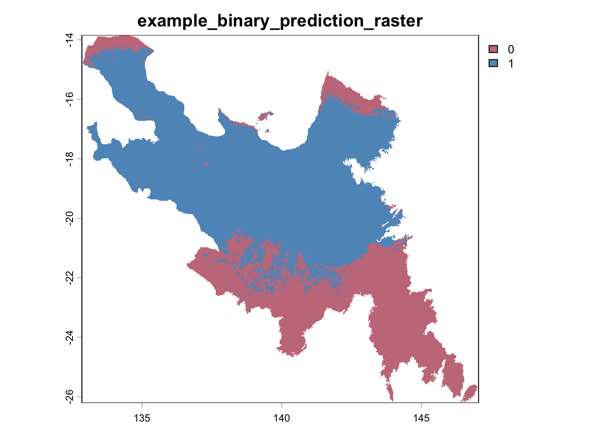
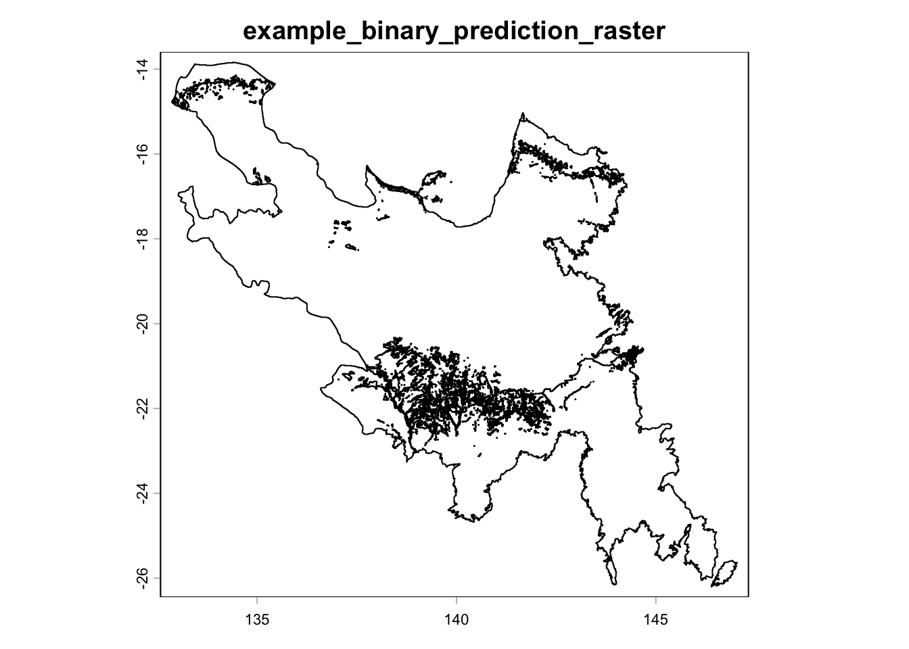

Converting GeoTIFF (.tif) to Shapefile (.shp) Format
Author details: Dr Ryan Newis
Editor details: Xiang Zhao
Contact details: support@ecocommons.org.au
Copyright statement: This script is the product of the EcoCommons platform. Please refer to the EcoCommons website for more details: https://www.ecocommons.org.au/
Date: Feb 2026
Script and Data Information
This notebook provides a simple, reproducible example of converting a GeoTIFF raster (.tif) into a vector shapefile (.shp) using the terra package in R. It is intended as a lightweight template that can be adapted to other raster-based spatial datasets and workflows requiring vector outputs.
Other file formats of this notebook
Notebook
Files
Open in Colab / ARDC Jupyter
DOI
GeoTIFF to Shapefile
Introduction
Raster and vector data represent two fundamental formats for storing spatial information. Raster datasets (e.g. GeoTIFF) store values in a grid of cells, while vector datasets (e.g. shapefile) represent spatial features as points, lines, or polygons. In many ecological and environmental workflows, it is necessary to convert raster data into vector polygons to enable integration with other vector-based datasets or modelling tools.
Although format conversion is often treated as a straightforward technical step, preserving spatial metadata during this process is essential. Changes to the coordinate reference system (CRS) or spatial extent can introduce subtle spatial misalignment that may not be immediately visible but can affect downstream analyses and modelling results.
This notebook demonstrates a structured and transparent approach to converting a GeoTIFF raster to a polygon shapefile while explicitly verifying that key spatial properties, including CRS, extent, and geometry validity are maintained.
Key Concepts
K.1 Raster data structure
Raster datasets represent spatial information as a regular grid of cells, where each cell contains a value corresponding to a measured or modelled variable. Raster formats are well suited to continuous surfaces such as climate variables, elevation, or habitat suitability layers.
K.2 Vector data and shapefiles
Vector datasets represent spatial features as points, lines, or polygons. A shapefile (.shp) is a widely used vector format that stores geometric features alongside associated attribute information. Vector formats are commonly used for boundaries, administrative regions, and feature-based spatial analysis.
K.3 Raster-to-vector conversion (polygonisation)
Converting raster data to vector format involves transforming raster cells into polygon features. During this process, adjacent cells with the same value can be merged into single polygons to produce cleaner, more interpretable outputs. This transformation enables raster-derived information to be integrated with vector-based workflows and spatial analysis tools.
Notebook Objectives
Demonstrate how to read a GeoTIFF (.tif) raster file into R as a SpatRaster using the terra package.
Perform a basic visual check (plot) to confirm that the raster has been loaded correctly.
Convert the raster to a polygon shapefile (.shp) format and save the output while preserving the original file naming and providing a transparent output location.
Verify that key spatial metadata (CRS, extent, and geometry validity) are preserved during the conversion process.
Workflow Overview
This notebook follows a simple, linear workflow to convert a GeoTIFF raster to a polygon shapefile (.shp) format via the following steps:
Step 1: Set up the R environment and load the required packages (terra, sf and googledrive).
Step 2: Define and validate the file path to the input GeoTIFF (.tif) raster.
Step 3: Read the raster into R as a SpatRaster object and confirm that a valid CRS is defined.
Step 4: Perform a visual check by plotting the raster to confirm it was read correctly.
Step 5: Convert the raster to polygon features and write the resulting layer to disk as a shapefile (.shp), preserving the original file name and providing a transparent output location.
Step 6: Validate that CRS, spatial extent, and geometry integrity are preserved after conversion.
Important: Converting continuous raster surfaces to shapefile format (.shp) may result in loss of numeric precision due to limitations of the shapefile format. For continuous prediction surfaces, retaining raster format (e.g., GeoTIFF) is strongly recommended.
In the near future, this material may form part of comprehensive support materials available to EcoCommons users. If you have any corrections or suggestions to improve the efficiency, please contact the EcoCommons team.
Step 1. Install and load required packages
Install and load R packages that are not already present in the working environment. For this notebook, the terra, sf and googledrive packages are required for converting a GeoTIFF (.tif) raster to a Shapefile (.shp) and for verifying spatial metadata during the workflow.
# Install and load required packages (if not already installed)required_packages <-c("terra","googledrive","sf")for (pkg in required_packages) {# Install if missingif (!pkg %in%installed.packages()[, "Package"]) {install.packages(pkg)cat("Package installed successfully:", pkg, "\n") }# Load quietlysuppressPackageStartupMessages(library(pkg, character.only =TRUE) )cat("Package loaded successfully:", pkg, "\n")}
Package loaded successfully: terra
Package loaded successfully: googledrive
Package loaded successfully: sf
Step 2. Define the path to the input GeoTIFF raster file
We have provided an example GeoTIFF (.tif) for this notebook via OPTION 2 – Google Drive. If you would like to use your own GeoTIFF, choose OPTION 1, commenting out this line:
tif_file <- NULL
and uncomment this line with your updated path:
tif_file <- "/path_to_your_file
The example GeoTIFF is a binary prediction of suitable habitat for a modelled bird species. Converting a raster (.tif) to polygons (.shp) is generally recommended for categorical rasters or rasters that have been reclassified into a small number of categories, rather than for continuous prediction rasters (a common output of species distribution modelling).
Note: The input GeoTIFF raster must have a valid Coordinate Reference System (CRS) defined. If the file does not contain CRS information, the conversion will stop.
# OPTION 1: User-defined local GeoTIFF filetif_file <-NULL#tif_file <- "/path_to_your_file"# OPTION 2: Download example GeoTIFF if no local fileif (is.null(tif_file)) {drive_deauth() workspace <-getwd() datafolder_path <-file.path(workspace, "data")if (!dir.exists(datafolder_path)) {dir.create(datafolder_path, recursive =TRUE) } tif_file_id <-"18_wS_vmeZRACysRJUdyM_UaZwPLXHdoa"# Get file metadata (to retrieve original name) file_info <-drive_get(as_id(tif_file_id))# Build full local path using original filename tif_file <-file.path(datafolder_path, file_info$name)# Download to that exact file pathdrive_download(as_id(tif_file_id),path = tif_file,overwrite =TRUE )}
# Final safety checkif (!file.exists(tif_file)) {stop("Input GeoTIFF file not found.")}# Extract base file name (used downstream)base_name <- tools::file_path_sans_ext(basename(tif_file))
Step 3. Read GeoTIFF raster into R
The rast() function reads the GeoTIFF (.tif) file into R as a SpatRaster object.
# Read the GeoTIFF into R as a SpatRaster objectinput_raster <-rast(tif_file)cat("CRS of input raster:\n")
CRS of input raster:
print(crs(input_raster))
[1] "GEOGCRS[\"WGS 84\",\n ENSEMBLE[\"World Geodetic System 1984 ensemble\",\n MEMBER[\"World Geodetic System 1984 (Transit)\"],\n MEMBER[\"World Geodetic System 1984 (G730)\"],\n MEMBER[\"World Geodetic System 1984 (G873)\"],\n MEMBER[\"World Geodetic System 1984 (G1150)\"],\n MEMBER[\"World Geodetic System 1984 (G1674)\"],\n MEMBER[\"World Geodetic System 1984 (G1762)\"],\n MEMBER[\"World Geodetic System 1984 (G2139)\"],\n MEMBER[\"World Geodetic System 1984 (G2296)\"],\n ELLIPSOID[\"WGS 84\",6378137,298.257223563,\n LENGTHUNIT[\"metre\",1]],\n ENSEMBLEACCURACY[2.0]],\n PRIMEM[\"Greenwich\",0,\n ANGLEUNIT[\"degree\",0.0174532925199433]],\n CS[ellipsoidal,2],\n AXIS[\"geodetic latitude (Lat)\",north,\n ORDER[1],\n ANGLEUNIT[\"degree\",0.0174532925199433]],\n AXIS[\"geodetic longitude (Lon)\",east,\n ORDER[2],\n ANGLEUNIT[\"degree\",0.0174532925199433]],\n USAGE[\n SCOPE[\"Horizontal component of 3D system.\"],\n AREA[\"World.\"],\n BBOX[-90,-180,90,180]],\n ID[\"EPSG\",4326]]"
# Stop if CRS is missingif (is.na(crs(input_raster)) ||crs(input_raster) =="") {stop("❌ Input GeoTIFF raster has NO CRS defined.\n","Please ensure the file has a valid CRS before proceeding." )}
Step 4. Plot raster
Plot the raster to confirm that it has been read correctly into R before proceeding with conversion. At this stage, the raster exists only as an in-memory SpatRaster object and has not yet been converted or written to disk.
#plot(input_raster, main = base_name)# Ensure raster is treated as categoricalinput_raster <-as.factor(input_raster)# Get number of classesn_classes <-length(unique(values(input_raster)))# Define stable palette (better than rainbow)pal <-hcl.colors(n_classes, "Dark2")# Plot raster with consistent paletteplot(input_raster,col = pal,main = base_name)

Step 5. Convert raster to polygon and save shapefile
Now convert the raster to a shapefile and also save and plot the converted file. By default, the output is written to the same directory as the input raster (.tif) file. We also produce a plot to visually check the GeoTIFF (.tif) to Shapefile (.shp) conversion.
# Convert raster to polygons# dissolve = TRUE merges adjacent cells with the same valuepolygon_vector <-as.polygons( input_raster,dissolve =TRUE)# Save .shp output file to the same folder as the input raster out_dir <-dirname(tif_file)# Build the output file name (using previously defined base_name)out_file <-file.path(out_dir, paste0(base_name, "_converted.shp"))# Write shapefilewriteVector( polygon_vector, out_file,overwrite =TRUE)cat("Shapefile written to:\n", out_file, "\n")
Shapefile written to:
/Users/xiangzhaoqcif/dev/notebook-blog/notebooks/raster_format/data/example_binary_prediction_raster_converted.shp
plot(polygon_vector, main = base_name)

Step 6. Verify spatial metadata after writing shapefile
Reload the shapefile and confirm that CRS, extent, and geometry integrity have been preserved.
# Reload written shapefilewritten_vector <-vect(out_file)# CRS check# Extract CRS info for input rasterinput_crs_info <- terra::crs(input_raster, describe =TRUE)input_crs_name <- input_crs_info$nameinput_epsg <- input_crs_info$code# Extract CRS info for output vectoroutput_crs_info <- terra::crs(written_vector, describe =TRUE)output_crs_name <- output_crs_info$nameoutput_epsg <- output_crs_info$codecat("\nInput CRS name:", input_crs_name, "\n")
input_ext <-as.vector(terra::ext(input_raster))output_ext <-as.vector(terra::ext(written_vector))if (max(abs(input_ext - output_ext)) >0.02) {stop("❌ Extent mismatch beyond acceptable tolerance.")}# Geometry validity check# Convert to sf for geometry validationwritten_sf <- sf::st_as_sf(written_vector)if (!all(sf::st_is_valid(written_sf))) {stop("❌ Invalid geometries detected in output shapefile.")}cat("\n✅ All spatial metadata successfully preserved during conversion.\n")
✅ All spatial metadata successfully preserved during conversion.
plot
standardGeneric for "plot" defined from package "base"
function (x, y, ...)
standardGeneric("plot")
<environment: 0x12ad951c8>
Methods may be defined for arguments: x, y
Use showMethods(plot) for currently available ones.
Summary
This notebook demonstrated a simple, reproducible workflow for converting a GeoTIFF (.tif) raster into a polygon shapefile (.shp) format using the terra and sf packages in R, while explicitly verifying that key spatial metadata and geometry integrity were preserved during conversion.
A companion notebook (link below) demonstrates the reverse workflow, converting a shapefile (.shp) to GeoTIFF format.
Newis, R., & Zhao, X. (2026). Converting GeoTIFF (.tif) to Shapefile (.shp) Format (Version 1.0) [Computational notebook]. Zenodo. https://doi.org/10.5281/zenodo.19379843
footer
EcoCommons received investment (https://doi.org/10.3565/chbq-mr75) from the Australian Research Data Commons (ARDC). The ARDC is enabled by the National Collaborative Research Infrastructure Strategy (NCRIS).
Our Partner
How to Cite EcoCommons
If you use EcoCommons in your research, please cite the platform as follows: